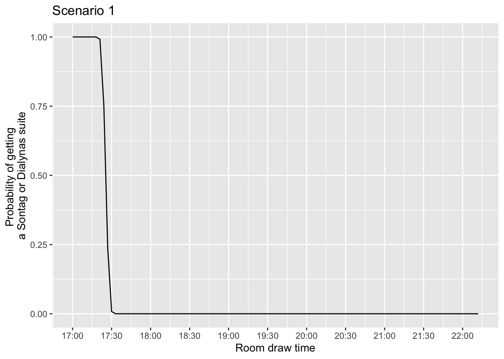
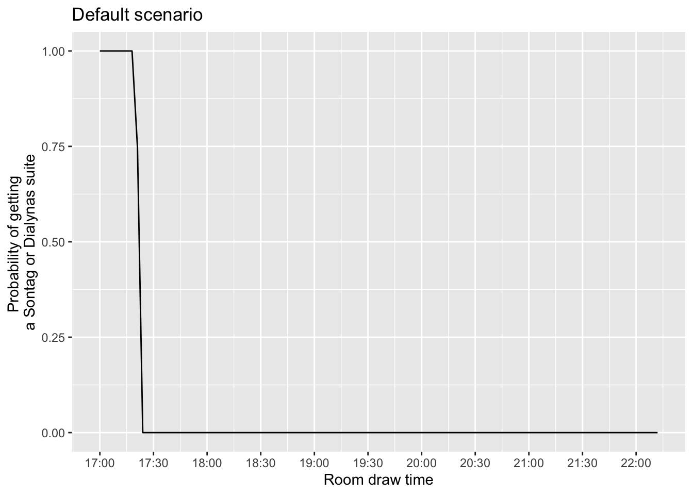

How likely is it to get a room in Sontag or Dialynas as a rising senior?
Sontag & Dialynas
The newest (and most coveted) dorms on Pomona’s campus are Sontag and Dialynas, built in 2011. Collectively, Sontag and Dialynas have 8 6-person suites, 26 4-person suites, and 1 3-person suite. 3 of the 4-person suites and the 3-person suite are reserved for RAs, who select housing prior to the general selection process. This leaves 8 6-person suites and 23 4-person suites up for grabs, or 31 suites in total.
Room Draw
Each year, students in each grade are randomly assigned housing selection times at 3-minute intervals beginning at 5:00pm. Seniors are assigned times corresponding to a later date, juniors are assigned times for the day after the seniors select, and sophomores the day after juniors. There are usually 4 students assigned to each 3-minute interval. There are administrative breaks after each hour (i.e., from 6:00 to 6:15pm, 7:15 to 7:30pm, 8:30 to 8:45pm, etc.). Students can create housing groups, where the only time that matters is the earliest one. For example, a student with a 5:15pm time could “pull up” 3 friends with later times into a Sontag or Dialynas suite.
The Simulation
This simulation will aim to model room draw for the class of 2028 this spring and the probability, based on assigned room draw time, of living in Sontag or Dialynas.
According to Pomona’s website, there were 431 students from the class of 2028 on campus in spring 2026 (numbers for fall 2026 are inaccurate due to a significant number of juniors studying abroad). The number of students on campus does not directly inform the number of student selecting housing. For fall 2026, for example, there are 396 seniors1 on campus, while only 300 rising seniors2 selected housing last spring. This difference is due to students receiving housing assignments prior to room draw through ResLife (RAs and their selected suitemates), language housing (i.e. Oldenborg), accommodations, or off-campus housing.3
It is therefore difficult to predict the exact number of rising seniors who will be selecting housing this spring. In the past three years, between 300 and 342 rising seniors have selected on “Senior Day.” Due to the relatively large size of the class of 2028, we will estimate 340 rising seniors will select this spring.
Basic Probability
First, how likely is it for any one rising senior to get into Sontag or Dialynas? Due to the ability to be pulled up by a friend, the likelihood of getting a suite is not the same as the likelihood of being the one with the good time. There are 31 suites available, so only 31 students will end up selecting one of these suites. Therefore, the probability of any one student selecting a Sontag or Dialynas suite is 31 out of 340, or 9.1%.
Let’s say you have a group of 4 friends and you all agree to pull each other up if one of you gets a good-enough time. The 6-person suites tend to be the first to go, so it’s not likely you would face the problem of having only 6-person suites left to choose from. In this case, there is a 90.9% chance of any one of you not getting a good enough time. Therefore, there is a 68.2% chance that none of the four of you will get a good enough time, and a 31.8% chance that at least one of you will.
If you have a group of 6 friends, you each have a 2.4% chance of being able to select a 6-person suite (as there are only 8 available). Collectively, there is a 86.7% chance none of you get a good enough time, and therefore a 13.3% chance of getting a 6-person suite.
Simulation:
After housing times are assigned, students are still sometimes unsure whether they will be able to get a Sontag or Dialynas suite, which is due to some students with very early times simply not wanting to live in a suite and thus selecting a single elsewhere or some students with very early times being pulled up into a suite by a friend with an even earlier time. These slight variations mean that it is not just the first 31 students who get the suites. For fall 2025, the last Sontag/Dialynas suite was selected at 5:27pm, and for fall 2026 it was as late as 5:33pm.
So, for the students just on the cusp of early, how likely is it that Sontag/Dialynas suites will still be available when they select housing?
Assumptions:
1. Not all students will want to select a suite in Sontag or Dialynas. The number of students who decline to choose one of these suites despite having an early enough time is randomly distributed between 0 and 5.
2. Sometimes, students will pull up someone else with an early time. The number of students pulled up is also randomly distributed between 0 and 5.
Code
library(tidyverse)library(hms)library(scales)# Create times every 3 minutes, accounting for the 15-minute administrative breaks every hour. hour1 <-as_hms(as_hms("17:00:00") +hms(minutes =3* (0:19)))hour2 <-as_hms(as_hms("18:15:00") +hms(minutes =3* (0:19)))hour3 <-as_hms(as_hms("19:30:00") +hms(minutes =3* (0:19)))hour4 <-as_hms(as_hms("20:45:00") +hms(minutes =3* (0:19)))hour5 <-as_hms(as_hms("22:00:00") +hms(minutes =3* (0:4)))# Aggregate all the times into a single columntimes <-c(hour1, hour2, hour3, hour4, hour5)# Account for the 4 students assigned to each individual timeall_times <-c(rep.int(times, 4))# Assign an order to the timestime_numbers <-data.frame(time =c(sort(all_times)), number =c(1:340))# Create a function for a single drawsingle_draw <-function() { decline =sample(0:5, 1) pull_up =sample(0:5, 1) time_numbers |>mutate(sontag =ifelse(number <=31+ decline + pull_up, TRUE, FALSE)) |>group_by(time) |>summarize(prob =mean(sontag))}# Map the function. This runs our single_draw function 1,000 times and randomly selects a number of students who decline and a number of students who were pulled up each time. The final dataframe will provide the probabilities of being able to select a Sontag or Dialynas suite for each room draw time. simulation <-map(1:1000, \(x) single_draw()) |>list_rbind () |>group_by(time) |>summarize(prob =mean(prob))
Visualize probabilities

Comparison to scenario with no declines or early pull ups

The primary insight is that, as one might expect, when we create the possibility that students may not want to select a Sontag or Dialynas suite even if they have an early enough time or that some students with early times are pulled up by other students with even earlier times, students assigned slightly later times (between ~5:21 and 5:27pm) have a higher chance of getting one of these suites. This slight difference can be seen when comparing the two graphs. One can also see that the 5:18pm time is where the probability begins dropping off for the the first scenario, while it begins falling at 5:15pm in the default scenario where every student selects a Sontag/Dialynas suite when they can.
In other words, room draw is highly competitive, but sometimes those few declining or pulled-up students make a huge difference for students with the 5:21, 5:24, and 5:27pm times.